Meet the 3DView main
window
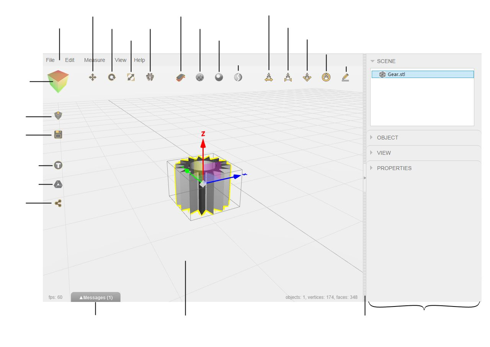
Menu
Most 3DView functionality and options are accessible through this main
menu.
3D Scene
This is the place where all 3D models and associated controls are
shown. There are many ways you can navigate the view:
1. Using mouse
- Move your mouse while holding left mouse key - will rotate
the view
- Move your mouse while holding right mouse key (or Shift key
on a keyboard) - will pan the view
- Move your mouse up or down while holding
middle mouse key (or Ctrl key) - will zoom the view
- Mouse scrolling wheel will zoom the view as well
2. Using touchpad and keyboard
- Finger swipe while holding Alt / Command key - will rotate
the view
- Finger swipe while holding Shift key - will pan the view
- Up or down finger swipe while holding Ctrl key - will zoom
the view
- Two fingers pinch in/out will zoom the view
on multi-touch touchpad
3. Using touchscreen
- Finger swipe - will
rotate the view
- Two finger swipe in the
same direction - will pan the view
- Two fingers pinch
in/out - will zoom the view
Predefined
Views
You can quickly look at your models from the top- bottom, left- right,
and front- back directions.
To do that, click on a corresponding side of a 3DView cube: 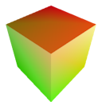

Clicking twice on the same side will give you the same angle but
opposite direction
Import

button
will open a dialog to select a file for import from a local disk.
You can also drag and drop your file to the 3DView window to open it.
Export
button will save all 3D
models currently opened in 3DView as a single STL file.
If
you have multiple models opened in 3D view and you want to save one of
them - select a model and choose menu
File>Export
Selected.
If you want to save all your models as separate files into a folder -
choose menu File>Export All to Folder.
Thingiverse
button
will
open your Thingiverse web page inside 3DView app. Thingiverse is the
largest collection of free 3D models that you can instantly
open
the in 3DView.
Internet connection is required!
Google Drive
button will
open your Google Drive web page inside 3DView app. There
you can manage your files and also instantly open the in 3DView.
Internet connection is required!
Share
button
will upload your file to your Google Drive cloud storage and provide
you with a link that you can share with your friends or colleagues.
This link can be instantly send via Gmail or published via
services such as Google+, Facebook and Twitter.
If you want to
stop sharing your model, change sharing options or remove the file
- access Google Drive with the appropriate
button.
Translate
button
will enable a mode that gives selected 3D object translation controls.
Translate controls will give you a possibility to
change position of an object.
- Drag X, Y or Z
arrow to move the object in a single direction along the
chosen
axis
- Drag Cyan, Magenta
or Yellow
square to move over a chosen plane XY,
XZ
or YZ
- Drag a central point to move in arbitrary direction
|
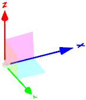 |
All changes will be reflected in the
Object
tab inside the
Object
Properties area.
Rotate
button
enable a mode that gives selected 3D object rotation controls.
Rotation controls will give you a possibility to rotate an object
- Drag over a Red, Green or Blue rings to rotate
along X,
Y
or Z
axis
- Drag over a thick Gray
ring to rotate along the view axis
|
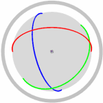 |
All changes will be reflected in the
Object
tab inside the
Object
Properties area.
Scale
button
enable a mode that gives selected 3D object scaling controls.
Rotation controls will give you a possibility to rotate an object
- Drag X, Y or Z
boxes to scale the along the chosen axis
- Drag a central point left and right to scale
proportionally
|
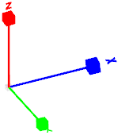 |
All changes will be reflected in the
Object
tab inside the
Object
Properties area.
Assemble /
Disassemble / Auto Place Objects
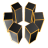button
repositions all poeces of selected assembly
object so they can be seen separately (disassemble). If no
object is selected - this button does auto-positioning of parts on a
scene or inside 3D printer's platform. Second click on this button put
all parts back to their original
place (assemble).
Show
Inverted Surfaces
button make
inverted surfaces visible or hidden. If visible, inverted surfaces are
shown in red color.
Show Triangles
button make
triangles visible or hidden
Show Holes
button
enables the mode where surface edges and holes are
highlighted.
After this mode is on, the amount of bad edges (if any) may
appear in the
Properties
tab inside the
Object
Properties area.
Structural
Analysis

button
enables Strectural Analysis mode. When enabled, any selected object got
analyzed for thin walls,
self-intersections and supports.
After Strectural Analysis is performed:
- All objects on a 3D
Scene are displayed in X-Ray viewing mode allowing
to look through them
- Surfaces of selected object got color gradient from red to
green depending on their wall thickness
- Intersecting surfaces of selected object got blue color
- Analysis tab
will appear in the Object
Properties area
- Supports volume estimation is calculated. For more
information see Properties
tab
Measure
Distance
button
is for measuring distance between 2 points. To create a distance
measurement- press this button and pick 2 points on a
3D Scene.
Distance measurement object:
- Can be moved on a 3D Scene
by dragging the distance line or arrows
- Named or made hidden in the Object
Properties area
- Deleted with a Del key
Measure
Thickness
button
is for measuring object's wall thickness at a point. To create
a thickness
measurement- press this button and pick 1 point on a
3D Scene's object.
Thickness measurement object:
- Can be moved on a 3D
Scene
by dragging the distance line or arrows
- Named or made hidden in the Object
Properties area
- Deleted with a Del key
Measure Angle
button
is for measuring angle between 3 points. To create an angle
measurement- press this button and pick 3 points on a
3D Scene's object: A, B
and C. The
angle is measured between segments AB and BC.
Angle measurement object:
- Can be moved on a 3D Scene by dragging the
arc or value
- Can show inside or outside angle. Drag the arc or
value inside/outside the angle segment
- Named or made hidden in the Object
Properties area
- Deleted with a Del key
Measure Radius
button
is for measuring radius of a circle defined by 3 points. To create a
radius
measurement- press this button and pick 3 points on a
3D Scene located on a
circle.
Radius measurement object:
- Can be moved on a 3D
Scene by dragging the radius line or value
- Named or made hidden in the Object
Properties area
- Deleted with a Del key
Annotation
button
creates a new annotation. Press this button and pick 1 point on
a
3D Scene .
Annotation object:
- Can be moved on a 3D
Scene by dragging its text area
- Set, named or made hidden in the Object
Properties area
- Deleted with a Del key
Messages /
Revisions tab
Messages / Revisions tab contains messages and revisions for the file
stored
on Google Drive. It can be used for collaboration with other
3DView users. If a shared file is
opened by another person, he/she can send you a message and update your
3D model.
You may receive e-mail notification when you got a new message.
All 3D model changes will be stored as new revisions so you can go back
to your original version at any time.
Sidebar
Sidebar contains
Objects Tree
and
Object Properties
area. The sidebar can be hidden/shown by pressing the button in the
middle of the
Divider line.
Objects Tree
Objects Tree tells you what 3D objects you have on your
3D Scene and also is
useful for object selection. Click on the object name inside the
Objects Tree to select it.
Selected object will get a selection box around it and
translation,
rotation or
scaling
controls depending on which mode is active.
Object
Properties
Object Properties area contains important information about selected
object.
This is the place where you can set the name of the object; make it
visible/invisible on the
3D
Scene ; set exact position, orientation angles and
scale.
This area may be divided between several collapsible tabs:
Object
tab:
- Change the name of selected object
- Change object's position
- Rotate object
- Scale object
- Display object's
dimensions in model units (mm
or inch)
|
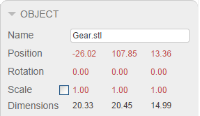
|
3D
Printer tab:
- 3D printer object can be added/removed from "3D
Printing" menu item
- When added, it became selectable in the Objects Tree
- 3D printer object provides visual reference of your
object's position inside a build chamber of a 3D printer
- Units parameter affects printer chamber size and also
give us an idea which units your objects are saved in
- Physical
printer parameters such as Layer (thickness) and Resolution (or min
detail size) affects many operations such as stitching, wall thickness
analysis, triangle reduction etc.
- Auto placement parameters such as Min Z and Margin
controls Auto Place
function behavior.
- 3D printer settings are available as pre-defined
profiles
- It is possible to define and save your own profile
|
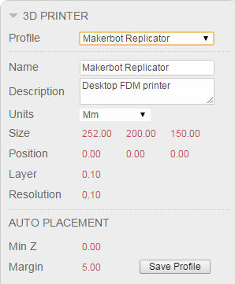
|
View
tab:
- Set object clipping by X, Y or Z
plane (no clipping, hide left side, hide right side)
- Set clipping plane position in X, Y
or Z
- Enable Slice mode
- Set distance between slices
- Set object's color
- Show or hide object
|
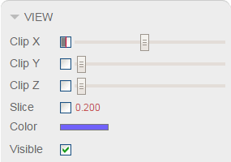
|
Analysis tab:
- Change the contrast of X-Ray viewing mode
- Show or hide thin walls
- Set minimum wall thickness. Surfaces having thickness
less than this value got red color
- Set
maximum wall thickness. Surfaces having thickness more than this value
are not displayed. Surfaces having thickness between minimal and
maximal value got red-green gradient color.
- Show or hide intersecting surfaces
- Perform analysis again (e.g. after object is
changed)
|
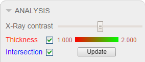
|
Properties tab:
- Display object's volume in model
units (e.g. mm³
or inch³)
- Display object's supports volume estimation
- Supports volume estimation corresponds
to "Volume supports" for the object placed on Z=0 plane.
- It is calculated as a total volume of the space
underneath surfaces that potentially require support.
- Actual supports volume may vary depending on
supports density and other variables.
- Display object's vertices (points) count
- Display object's faces (triangles) count
- Display object's bad edges count (when Holes mode is
on)
- Display object's intersecting faces count (when
Structural Analysis mode is on)
|
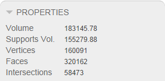
|
Note that the values marked with a red color are editable.
Divider
The divider between
3D Scene
and
Sidebar
can hide or show
Sidebar.
Press the button
in the middle of the divider to do that.